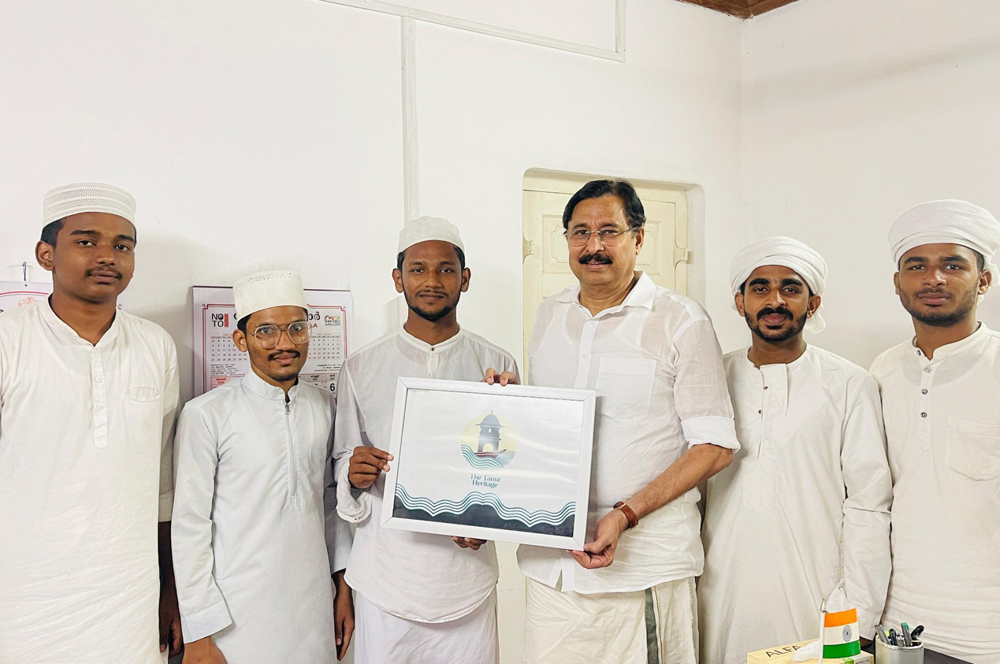

.png)


കർഷകർക്ക് പൂമണം കൊടുത്ത വദ്ജി ഗ്രാമം
പൂപ്പാടങ്ങളുടെ പകിട്ടും സുഗന്ധവും വദ്ജിയിലെ ഓരോ നിമിഷങ്ങൾക്കും നിറം ചാർത്തുന്നതായിരുന്നു. 'ഗുലാബാച്ചെ ഗാവ്' എന്ന...


മഹ്ബരിനും മലബാറും ഇടയിലെ സ്വദഖത്തുല്ലാഹിൽ ഖാഹിരി
കീഴക്കരയുടെ ആത്മീയ പ്രഭാവത്തിന് അടിത്തറയിട്ടതും വിജ്ഞാനത്തിന്റെ...
ക്ഷമിക്കണം റോജി ജോൺ, നിങ്ങളിൽ ഞങ്ങൾക്ക് സംശയങ്ങളുണ്ട്
വിനോദ് കുമാർ കല്ലോലിക്കലിനെ നിയമിക്കുക വഴി ആ സ്ഥാപനത്തിന്റെ...
നിങ്ങൾക്ക് ഒറ്റയ്ക്ക് കേൾക്കാൻ ഇത്ര ഒച്ച വേണോ?
ശബ്ദമര്യാദ ശബ്ദമുണ്ടാക്കാതിരിക്കാനുള്ള നിയമം...
update
അഗ്നിപഥിലും കാർഷിക നിയമങ്ങളിലും മോദി തോറ്റുവോ? | BINOY THOMAS
EXPLAINER
ഇന്ത്യക്കാർക്ക് 'ലിക്വിഡ് മണി'യെ വിശ്വാസം | നോട്ടുനിരോധനത്തെ...
update
E20 പെട്രോൾ; സർക്കാർ സ്പോൺസേഡ് വഞ്ചന? | BINOY THOMAS | NEWS KITCHEN
.png) InSight
InSight
വിദ്യാഭ്യാസ കച്ചവടക്കാരെ കയറൂരി വിടുകയാണോ? | Dr. PJ VINCENT | BINOY...
നമ്മൾ ഒഴിവാക്കുന്ന വസ്ത്രങ്ങൾ എങ്ങോട്ട് പോകുന്നു? | പഴയ...
ക്രിയേറ്റീവ് മാർക്കറ്റിങ്ങിലെ AI | salim kodur | risala update

ജാമിയ മില്ലിയ ഇസ്ലാമിയ | സത്യം പറഞ്ഞാൽ | dr. ns abdul hameed
പടക്ക് പരാന്നിയുന്നതോ രാഷ്ട്രീയസ്നേഹം? | binoy thomas

ചികിത്സ കിട്ടാത്ത കേരള മോഡൽ | risala update

ക്ഷമിക്കണം റോജി ജോൺ, നിങ്ങളിൽ ഞങ്ങൾക്ക് സംശയങ്ങളുണ്ട്
വിനോദ് കുമാർ കല്ലോലിക്കലിനെ നിയമിക്കുക വഴി ആ സ്ഥാപനത്തിന്റെ...
കർഷകർക്ക് പൂമണം കൊടുത്ത വദ്ജി ഗ്രാമം
പൂപ്പാടങ്ങളുടെ പകിട്ടും സുഗന്ധവും വദ്ജിയിലെ ഓരോ നിമിഷങ്ങൾക്കും...
മഹ്ബരിനും മലബാറും ഇടയിലെ സ്വദഖത്തുല്ലാഹിൽ ഖാഹിരി
കീഴക്കരയുടെ ആത്മീയ പ്രഭാവത്തിന് അടിത്തറയിട്ടതും വിജ്ഞാനത്തിന്റെ...
നിങ്ങൾക്ക് ഒറ്റയ്ക്ക് കേൾക്കാൻ ഇത്ര ഒച്ച വേണോ?
ശബ്ദമര്യാദ ശബ്ദമുണ്ടാക്കാതിരിക്കാനുള്ള നിയമം...
About
Who we are
The Tanur Heritage is a cultural and historical program aimed at unveiling the rich history and vibrant traditions of Tanur, a coastal town in Kerala. The initiative brings together historians, scholars, and the local community to celebrate and explore Tanur's diverse cultural past.
Through exhibitions, talks, and cultural performances, Tanur Heritage highlights the town’s role in Kerala's historical narrative, showcasing its contributions to art, religion, and maritime trade.
Explore Heritage ArchivesLeadership
Our Team
Sayyid Munavvar Ali Shihab Thangal
Heritage Chairman
Dr. Shakeel
Heritage Ambassador
Rasheed Moriya
Heritage Director
CP Abdul Basith Hudawi
Heritage Curator